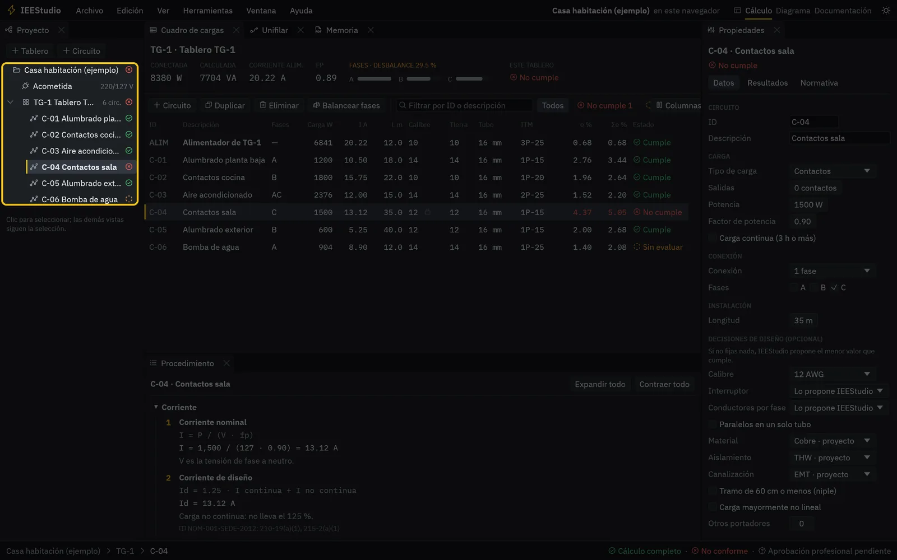
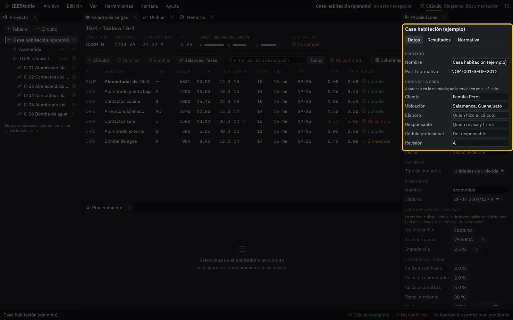
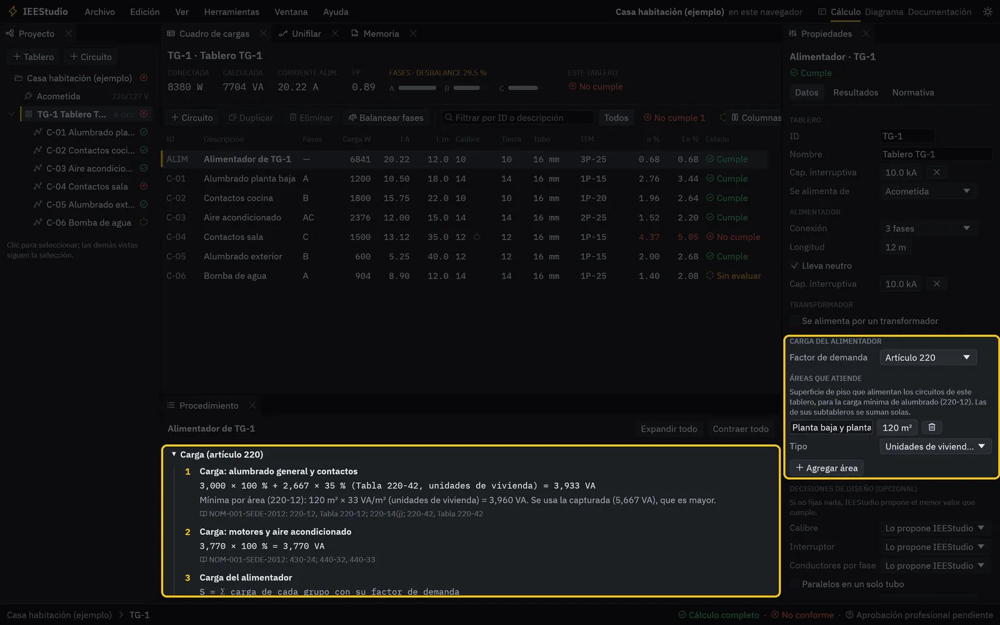
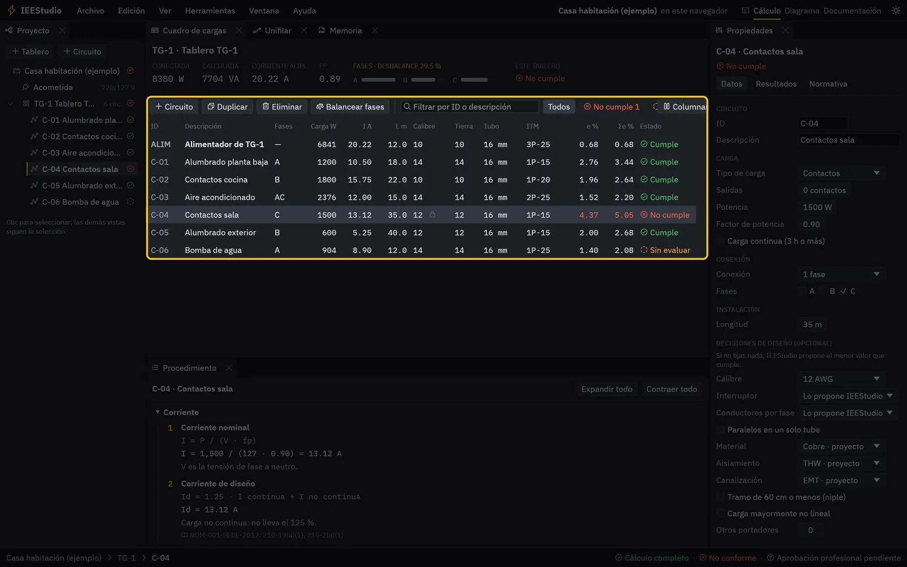
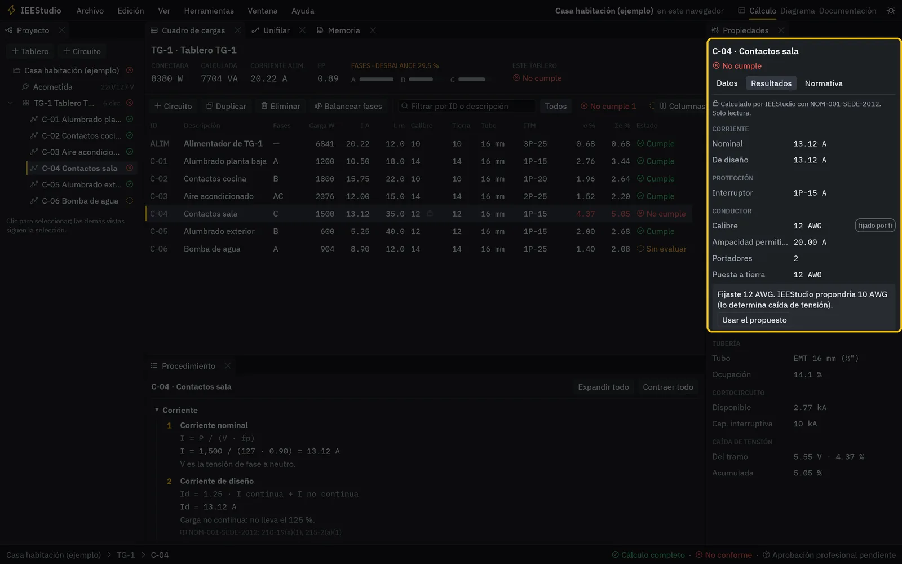
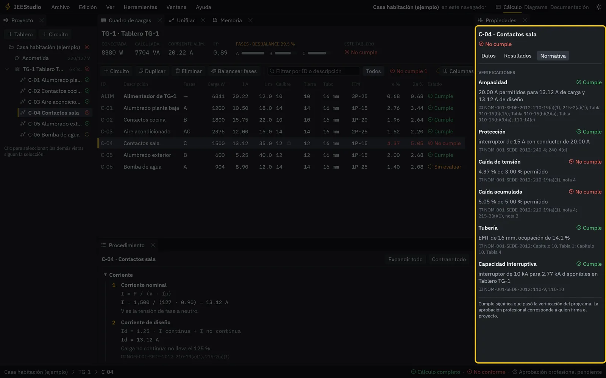
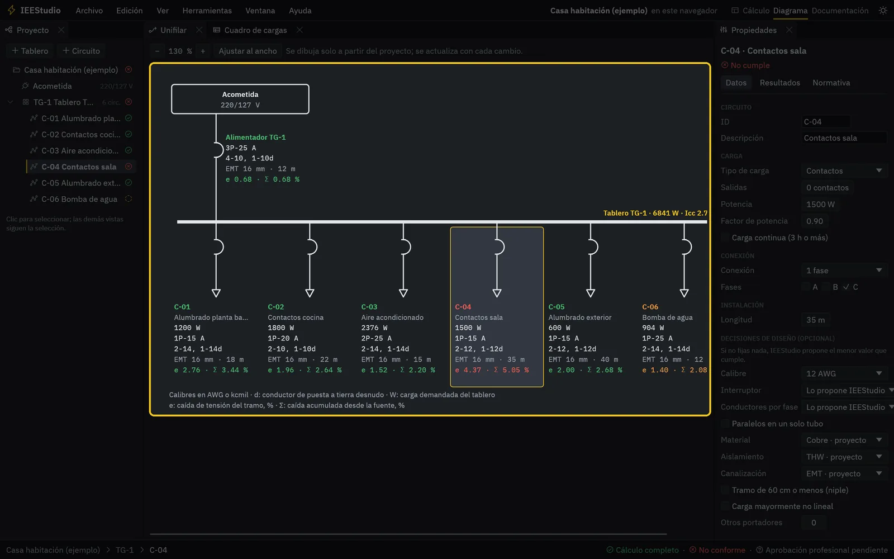
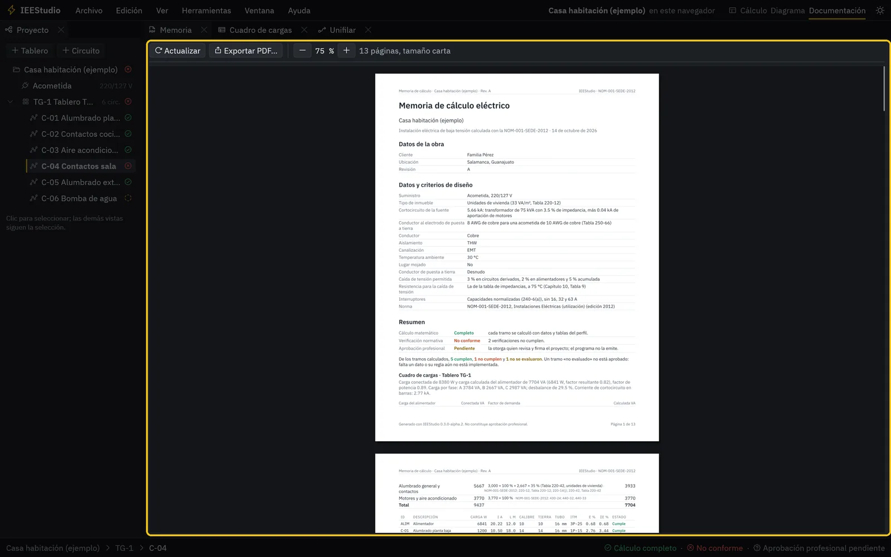
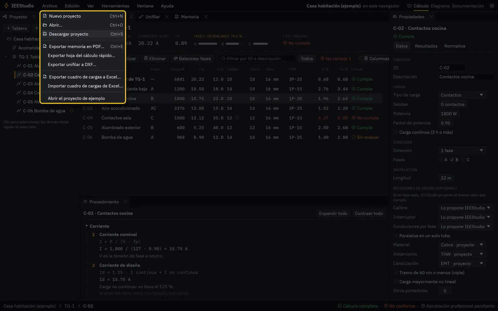
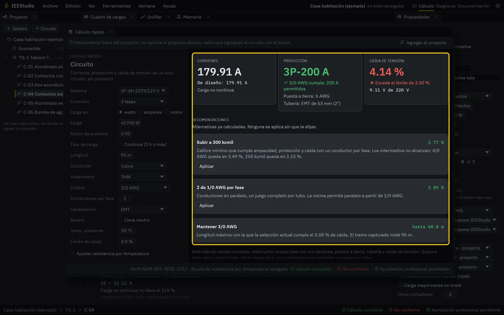

Guía
Un proyecto completo, paso a paso
Mira el recorrido en video o sigue los pasos con la app abierta. Todo lo que ves aquí funciona igual en el navegador y en Windows.
Narración con voz sintética y subtítulos integrados en español. El proyecto del video es el ejemplo que trae la app.
Paso a paso
De la acometida a la memoria
Abre IEEStudio
La app abre con un proyecto de ejemplo: una casa habitación con un tablero y seis circuitos. A la izquierda está el navegador del proyecto; haz clic en cualquier elemento y las demás vistas lo siguen.
- Para empezar el tuyo: Archivo, Nuevo proyecto.
- El ejemplo siempre está en Archivo, Abrir el proyecto de ejemplo.

Datos de la obra y la acometida
Selecciona el proyecto para capturar el cliente, la ubicación, quién elaboró y quién firma, el tipo de inmueble, el sistema de la acometida y los datos de cortocircuito de la compañía o del transformador.
- Los datos de la obra van a la portada de la memoria; no cambian el cálculo.
- Los límites de caída de tensión se ajustan aquí.

Tableros y carga del alimentador
En cada tablero eliges de dónde se alimenta, su conexión, la longitud del alimentador y las áreas que atiende. Con eso se calcula la carga según el artículo 220, con el detalle de cada grupo en el procedimiento.
- Si el tablero se alimenta por un transformador, márcalo y captura sus datos.
- Las áreas definen la carga mínima de alumbrado (Tabla 220-12).

Circuitos en el cuadro de cargas
Agrega circuitos con «+ Circuito» y captura su tipo de carga, potencia, fases y longitud. El cuadro de cargas se recalcula con cada cambio: corriente, calibre, tierra, tubo, interruptor, caída de tensión y estado.
- Ctrl+D duplica el circuito seleccionado y Supr lo elimina.
- «Balancear fases» reparte los circuitos entre A, B y C.

Revisa los resultados
En Propiedades, la pestaña Resultados muestra lo que calculó el programa para el circuito seleccionado. Si fijaste un calibre o un interruptor, te dice qué habría propuesto y por qué.
- Puedes fijar calibre, interruptor y conductores por fase, o dejar que IEEStudio proponga el menor que cumple.

Revisa la normativa
La pestaña Normativa lista cada verificación —ampacidad, protección, caída, tubería, capacidad interruptiva— con su estado y el artículo que aplica.
- Abajo, el Procedimiento muestra la fórmula y los valores de cada paso.

El diagrama unifilar
El espacio de trabajo Diagrama muestra el unifilar dibujado a partir del proyecto. No se dibuja a mano: cualquier cambio en el cuadro de cargas se refleja aquí.
- Archivo, Exportar unifilar a DXF, para seguir en AutoCAD.

La memoria de cálculo
El espacio Documentación muestra la vista previa de la memoria con los datos de la obra, el cuadro de cargas, el unifilar, las observaciones y el procedimiento. Expórtala a PDF con Ctrl+E.
- Las observaciones listan todo lo que no cumple o no se evaluó.

Guarda y exporta
En Windows, Guardar escribe un archivo .iees en tu carpeta. En el navegador, el proyecto se guarda solo en ese navegador y «Descargar proyecto» te da el .iees para tener tu copia.
- El cuadro de cargas se exporta a Excel y se importa de vuelta.
- Un .iees abre igual en la app en línea y en la de Windows.


Atajo
Cálculo rápido de un circuito
Con F8 o Herramientas, Cálculo rápido, calculas un circuito suelto: sistema, carga, longitud y conductor. Si no cumple, te da alternativas ya calculadas que aplicas con un clic, y con «Agregar al proyecto» lo pasas al tablero seleccionado.
Teclado
Atajos
| Ctrl N | Nuevo proyecto |
| Ctrl O | Abrir un proyecto (en el navegador, usa Archivo, Abrir) |
| Ctrl S | Guardar; en el navegador, descargar el proyecto |
| Ctrl E | Exportar la memoria en PDF |
| Ctrl Z / Ctrl Y | Deshacer y rehacer |
| Ctrl D | Duplicar el circuito seleccionado |
| Supr | Eliminar el circuito seleccionado |
| F2 a F8 | Mostrar u ocultar paneles: Proyecto, Cuadro de cargas, Unifilar, Memoria, Procedimiento, Propiedades y Cálculo rápido. En el navegador, F5 recarga la página: usa el menú Ventana. |
Preguntas frecuentes
Lo que más se pregunta
¿Cuesta algo?
No. IEEStudio es gratuito y de código abierto, también para uso profesional. No pide cuenta ni registro.
¿Mis proyectos se suben a internet?
No. En la versión en línea todo se calcula en tu navegador y el proyecto se guarda en ese mismo navegador. En Windows se guarda en tus carpetas. Ningún proyecto pasa por un servidor.
¿Si borro los datos del navegador pierdo el proyecto?
El proyecto que tenías abierto, sí. Por eso conviene descargar el .iees de vez en cuando: es tu copia y la puedes abrir en cualquier computadora.
¿La memoria que genera ya está aprobada?
No. IEEStudio verifica contra la norma y lo dice claramente, pero la aprobación la da el ingeniero responsable que revisa y firma. El programa nunca marca un proyecto como aprobado.
¿Qué hago si algo dice «no evaluado»?
Lee el motivo en la pestaña Normativa o en las observaciones de la memoria: casi siempre falta un dato, como la corriente de placa de un motor. Captúralo y se evalúa.
¿Funciona en el celular?
Abre, pero está pensado para pantallas grandes. En una computadora o tableta es mucho más cómodo.
¿Por qué Windows dice «Windows protegió su PC»?
Porque el instalador todavía no tiene firma digital; está en trámite. Elige «Más información» y «Ejecutar de todas formas». La versión en línea no tiene ese aviso.
Encontré un error o me falta algo
Repórtalo en GitHub. Si es un error de cálculo, incluye el archivo .iees o los datos del circuito.